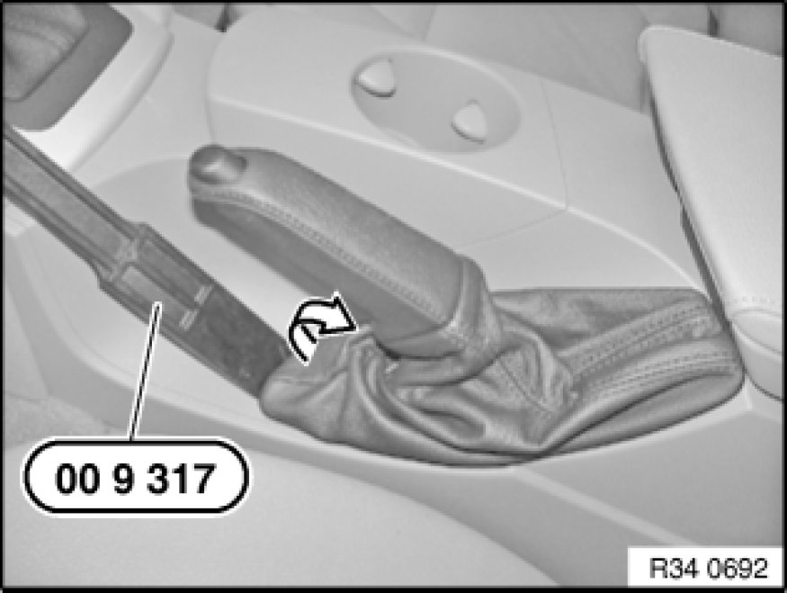
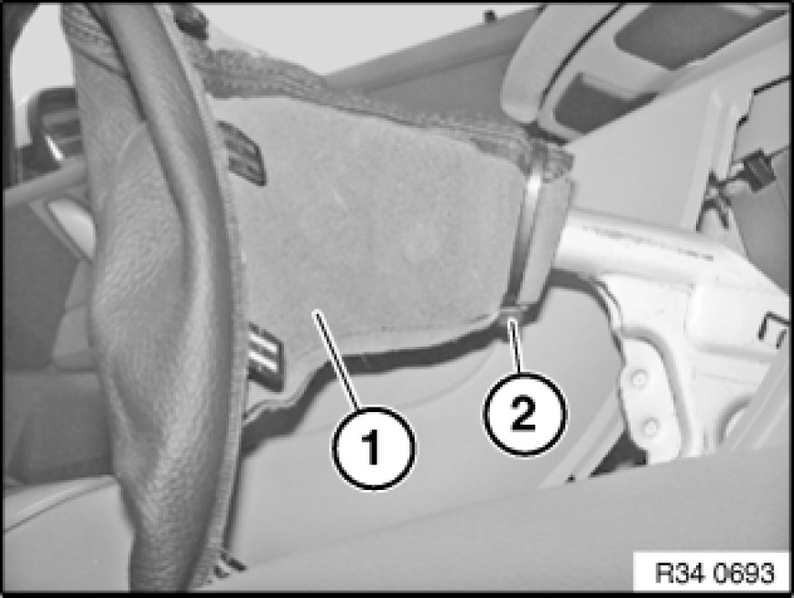

Removing and Installing/Replacing Gaiter for Handbrake Lever
34 41 ... - Removing and installing or replacing gaiter for handbrake lever

Special tools required:
- 00 9 317 00 9 317 Trim Panel Wedge

Unclip gaiter with special tool 00 9 317 00 9 317 Trim Panel Wedge.

Pull gaiter (1) over handbrake lever.
Cut cable ties (2) and remove gaiter.
Installation:
Eye of cable tie must face downward